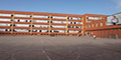

Природо-математическа гимназия „Акад. С. П. Корольов”
През 1972 година по предложение на ОНС-Благоевград МНП разрешава прием чрез конкурсен изпит по математика на 3 паралелки 8 клас с разширено изучаване на математика към ПГ ”Кирил и Методий”. Така се поставя началото на бъдещата Математическа гимназия. На 7 ноември 1974 година с указ на Държавния съвет гимназията приема за свой патрон името на руския учен и конструктор основоположник на практическата космонавтика в света- Сергей Павлович Корольов...
Езикова гимназия „Акад. Людмил Стоянов”, Благоевград, е първото и единствено профилирано езиково училище на територията на Югозападна България, което се утвърди като едно от най-добрите в страната. Началото е положено през 1984-1985 г. с директор Борис Войнов, поставил здрави основи, върху които се градят настоящите успехи на гимназията. На 22 май 1987 г. гимназията приема за свой патрон името на бележития български поет символист, социален творец, преводач и учен – академик Людмил Стоянов...
Национална хуманитарна гимназия „Св. Св. Кирил и Методий”
В началото на 80-те години на ХІХ век в Солун се създава и първото българско средно учебно заведение в Македония – Солунската гимназия. Нейните корени трябва да се търсят както във високите постижения в областта на просветното дело в Македония до Освобождението през 1878г. , така и в частност в културно – националното движение на солунските българи...
Професионална гимназия по икономика „Иван Илиев" в Благоевград е основана през 1949 година като търговска гимназия с патрон Иван Илиев. През 1952 става стопански техникум с прием след VIII клас и 4-год. срок на обучение по специалността банково дело с промишлен, търговски и селско – стопански профил. От 1956 е икономически техникум с 5-годишен срок на обучение...
Благоевградска професионална гимназия е създадена от Професионална гимназия по електротехника „Никола Вапцаров” и Професионална гимназия по механотехника „Методий Алексиев”...